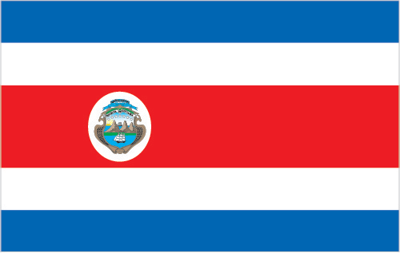

Central America and Caribbean :: COSTA RICA
Introduction :: COSTA RICA
-
Although explored by the Spanish early in the 16th century, initial attempts at colonizing Costa Rica proved unsuccessful due to a combination of factors, including disease from mosquito-infested swamps, brutal heat, resistance by natives, and pirate raids. It was not until 1563 that a permanent settlement of Cartago was established in the cooler, fertile central highlands. The area remained a colony for some two and a half centuries. In 1821, Costa Rica became one of several Central American provinces that jointly declared their independence from Spain. Two years later it joined the United Provinces of Central America, but this federation disintegrated in 1838, at which time Costa Rica proclaimed its sovereignty and independence. Since the late 19th century, only two brief periods of violence have marred the country's democratic development. In 1949, Costa Rica dissolved its armed forces. Although it still maintains a large agricultural sector, Costa Rica has expanded its economy to include strong technology and tourism industries. The standard of living is relatively high. Land ownership is widespread.
Geography :: COSTA RICA
-
Central America, bordering both the Caribbean Sea and the North Pacific Ocean, between Nicaragua and Panama10 00 N, 84 00 WCentral America and the Caribbeantotal: 51,100 sq kmland: 51,060 sq kmwater: 40 sq kmnote: includes Isla del Cococountry comparison to the world: 130slightly smaller than West Virginiatotal: 661 kmborder countries (2): Nicaragua 313 km, Panama 348 km1,290 kmterritorial sea: 12 nmexclusive economic zone: 200 nmcontinental shelf: 200 nmtropical and subtropical; dry season (December to April); rainy season (May to November); cooler in highlandscoastal plains separated by rugged mountains including over 100 volcanic cones, of which several are major active volcanoesmean elevation: 746 melevation extremes: lowest point: Pacific Ocean 0 mhighest point: Cerro Chirripo 3,819 mhydropoweragricultural land: 37.1%arable land 4.9%; permanent crops 6.7%; permanent pasture 25.5%forest: 51.5%other: 11.4% (2011 est.)1,015 sq km (2012)roughly half of the nation's population resides in urban areas; the capital of San Jose is the largest city and home to approximately one-fifth of the populationoccasional earthquakes, hurricanes along Atlantic coast; frequent flooding of lowlands at onset of rainy season and landslides; active volcanoesvolcanism: Arenal (1,670 m), which erupted in 2010, is the most active volcano in Costa Rica; a 1968 eruption destroyed the town of Tabacon; Irazu (3,432 m), situated just east of San Jose, has the potential to spew ash over the capital city as it did between 1963 and 1965; other historically active volcanoes include Miravalles, Poas, Rincon de la Vieja, and Turrialbadeforestation and land use change, largely a result of the clearing of land for cattle ranching and agriculture; soil erosion; coastal marine pollution; fisheries protection; solid waste management; air pollutionparty to: Biodiversity, Climate Change, Climate Change-Kyoto Protocol, Desertification, Endangered Species, Environmental Modification, Hazardous Wastes, Law of the Sea, Marine Dumping, Ozone Layer Protection, Wetlands, Whalingsigned, but not ratified: Marine Life Conservationfour volcanoes, two of them active, rise near the capital of San Jose in the center of the country; one of the volcanoes, Irazu, erupted destructively in 1963-65
People and Society :: COSTA RICA
-
4,930,258 (July 2017 est.)country comparison to the world: 123noun: Costa Rican(s)adjective: Costa Ricanwhite or mestizo 83.6%, mulato 6.7%, indigenous 2.4%, black of African descent 1.1%, other 1.1%, none 2.9%, unspecified 2.2% (2011 est.)Spanish (official), EnglishRoman Catholic 76.3%, Evangelical 13.7%, Jehovah's Witness 1.3%, other Protestant 0.7%, other 4.8%, none 3.2%Costa Rica's political stability, high standard of living, and well-developed social benefits system set it apart from its Central American neighbors. Through the government's sustained social spending - almost 20% of GDP annually - Costa Rica has made tremendous progress toward achieving its goal of providing universal access to education, healthcare, clean water, sanitation, and electricity. Since the 1970s, expansion of these services has led to a rapid decline in infant mortality, an increase in life expectancy at birth, and a sharp decrease in the birth rate. The average number of children born per women has fallen from about 7 in the 1960s to 3.5 in the early 1980s to below replacement level today. Costa Rica's poverty rate is lower than in most Latin American countries, but it has stalled at around 20% for almost two decades.Costa Rica is a popular regional immigration destination because of its job opportunities and social programs. Almost 9% of the population is foreign-born, with Nicaraguans comprising nearly three-quarters of the foreign population. Many Nicaraguans who perform unskilled seasonal labor enter Costa Rica illegally or overstay their visas, which continues to be a source of tension. Less than 3% of Costa Rica's population lives abroad. The overwhelming majority of expatriates have settled in the United States after completing a university degree or in order to work in a highly skilled field.0-14 years: 22.61% (male 570,063/female 544,502)15-24 years: 16.35% (male 410,993/female 394,865)25-54 years: 44.03% (male 1,092,504/female 1,078,458)55-64 years: 9.2% (male 220,879/female 232,530)65 years and over: 7.82% (male 177,882/female 207,582) (2017 est.)total dependency ratio: 45.4youth dependency ratio: 32.4elderly dependency ratio: 12.9potential support ratio: 7.7 (2015 est.)total: 31.3 yearsmale: 30.8 yearsfemale: 31.8 years (2017 est.)country comparison to the world: 1081.16% (2017 est.)country comparison to the world: 9515.5 births/1,000 population (2017 est.)country comparison to the world: 1204.7 deaths/1,000 population (2017 est.)country comparison to the world: 2010.8 migrant(s)/1,000 population (2017 est.)country comparison to the world: 60roughly half of the nation's population resides in urban areas; the capital of San Jose is the largest city and home to approximately one-fifth of the populationurban population: 78.5% of total population (2017)rate of urbanization: 2.1% annual rate of change (2015-20 est.)SAN JOSE (capital) 1.17 million (2015)at birth: 1.05 male(s)/female0-14 years: 1.05 male(s)/female15-24 years: 1.04 male(s)/female25-54 years: 1.01 male(s)/female55-64 years: 0.95 male(s)/female65 years and over: 0.86 male(s)/femaletotal population: 1.01 male(s)/female (2016 est.)25 deaths/100,000 live births (2015 est.)country comparison to the world: 124total: 8 deaths/1,000 live birthsmale: 8.8 deaths/1,000 live birthsfemale: 7.3 deaths/1,000 live births (2017 est.)country comparison to the world: 154total population: 78.7 yearsmale: 76.1 yearsfemale: 81.5 years (2017 est.)country comparison to the world: 581.89 children born/woman (2017 est.)country comparison to the world: 13976.2% (2011)9.3% of GDP (2014)country comparison to the world: 331.15 physicians/1,000 population (2013)1.2 beds/1,000 population (2012)improved:urban: 99.6% of populationrural: 91.9% of populationtotal: 97.8% of populationunimproved:urban: 0.4% of populationrural: 8.1% of populationtotal: 2.2% of population (2015 est.)improved:urban: 95.2% of populationrural: 92.3% of populationtotal: 94.5% of populationunimproved:urban: 4.8% of populationrural: 7.7% of populationtotal: 5.5% of population (2015 est.)0.4% (2016 est.)country comparison to the world: 7213,000 (2016 est.)country comparison to the world: 86<500 (2016 est.)degree of risk: intermediatefood or waterborne diseases: bacterial diarrheavectorborne diseases: dengue fevernote: active local transmission of Zika virus by Aedes species mosquitoes has been identified in this country (as of August 2016); it poses an important risk (a large number of cases possible) among US citizens if bitten by an infective mosquito; other less common ways to get Zika are through sex, via blood transfusion, or during pregnancy, in which the pregnant woman passes Zika virus to her fetus (2016)25.7% (2016)country comparison to the world: 481.1% (2008)country comparison to the world: 1307.6% of GDP (2015)country comparison to the world: 34definition: age 15 and over can read and writetotal population: 97.8%male: 97.7%female: 97.8% (2015 est.)total: 15 yearsmale: 15 yearsfemale: 16 years (2015)total: 23.3%male: 18.8%female: 31.7% (2016 est.)country comparison to the world: 62
Government :: COSTA RICA
-
conventional long form: Republic of Costa Ricaconventional short form: Costa Ricalocal long form: Republica de Costa Ricalocal short form: Costa Ricaetymology: the name means "rich coast" in Spanish and was first applied in the early colonial period of the 16th centurypresidential republicname: San Josegeographic coordinates: 9 56 N, 84 05 Wtime difference: UTC-6 (1 hour behind Washington, DC, during Standard Time)7 provinces (provincias, singular - provincia); Alajuela, Cartago, Guanacaste, Heredia, Limon, Puntarenas, San Jose15 September 1821 (from Spain)Independence Day, 15 September (1821)previous 1825; latest effective 8 November 1949; amended many times, last in 2015 (2016)civil law system based on Spanish civil code; judicial review of legislative acts in the Supreme Courtaccepts compulsory ICJ jurisdiction; accepts ICCt jurisdictioncitizenship by birth: yescitizenship by descent: yesdual citizenship recognized: yesresidency requirement for naturalization: 7 years18 years of age; universal and compulsorychief of state: President Luis Guillermo SOLIS Rivera (since 8 May 2014); First Vice President Helio FALLAS Venega (since 8 May 2014); Second Vice President Ana Helena CHACON Echeverria (since 8 May 2014); note - the president is both chief of state and head of governmenthead of government: President Luis Guillermo SOLIS Rivera (since 8 May 2014); First Vice President Helio FALLAS Venegas (since 8 May 2014); Second Vice President Ana Helena CHACON Echeverria (since 8 May 2014)cabinet: Cabinet selected by the presidentelections/appointments: president and vice presidents directly elected on the same ballot by modified majority popular vote (40% threshold) for a 4-year term (eligible for non-consecutive terms); election last held on 2 February 2014 with a runoff on 6 April 2014 (next to be held in February 2018)election results: Luis Guillermo SOLIS Rivera elected president; percent of vote - Luis Guillermo SOLIS Rivera (PAC) 77.8%; Johnny ARAYA (PLN) 22.2%description: unicameral Legislative Assembly or Asamblea Legislativa (57 seats; members directly elected in multi-seat constituencies - corresponding to the country's 7 provinces - by proportional representation vote; members serve 4-year terms)elections: last held on 2 February 2014 (next to be held in February 2018)election results: percent of vote by party - PLN 25.5%, PAC 23.8%, FA 13.1%, PUSC 10.0%, PML 7.9%, other 19.7% ; seats by party - PLN 18, PAC 13, FA 9, PUSC 8, PML 4, other 5highest court(s): Supreme Court of Justice (consists of 22 judges organized into 3 cassation chambers each with 5 judges and the Constitutional Chamber with 7 judges)judge selection and term of office: Supreme Court of Justice judges elected by the National Assembly for 8-year terms with renewal decided by the National Assemblysubordinate courts: appellate courts; trial courts; first instance and justice of the peace courts; Superior Electoral TribunalAccessibility Without Exclusion or PASE [Oscar Andres LOPEZ Arias]Broad Front (Frente Amplio) or PFA [Ana Patricia MORA]Citizen Action Party or PAC [Olivier PEREZ Gonzalez]Costa Rican Renovation Party or PRC [Gerardo Justo OROZCO Alvarez]Libertarian Movement Party or ML [Victor Danilo CUBERO Corrales]National Integration Party or PIN [Walter MUNOZ Cespedes]National Liberation Party or PLN [Bernal JIMENEZ]National Restoration Party or PRN [Carlos AVENDANO]Patriotic Alliance [Jorge ARAYA Westover]Popular Vanguard [Humberto VARGAS]Social Christian Unity Party or PUSC [Gerardo VARGAS]Authentic Confederation of Democratic Workers or CATD (Communist Party affiliate)National Chamber of Coffee GrowersConfederated Union of Workers or CUT (Communist Party affiliate)Confederation of Workers Rerum Novarum or CTRN (National Libertion Party affiliate)Costa Rican Confederation of Democratic Workers or CCTD (National Libertion Party affiliate)Costa Rican Exporter's Chamber or CADEXCOCosta Rican Solidarity MovementCosta Rican Union of Private Sector Enterprises or UCCAEPFederation of Public Service Workers or FTSPNational Association for Economic Development or ANFENational Association of Educators or ANDENational Association of Public and Private Employees or ANEPBCIE, CACM, CD, CELAC, FAO, G-77, IADB, IAEA, IBRD, ICAO, ICC (national committees), ICCt, ICRM, IDA, IFAD, IFC, IFRCS, ILO, IMF, IMO, IMSO, Interpol, IOC, IOM, IPU, ISO, ITSO, ITU, ITUC (NGOs), LAES, LAIA (observer), MIGA, NAM (observer), OAS, OIF (observer), OPANAL, OPCW, Pacific Alliance (observer), PCA, SICA, UN, UNCTAD, UNESCO, UNHCR, UNIDO, Union Latina, UNWTO, UPU, WCO, WFTU (NGOs), WHO, WIPO, WMO, WTOchief of mission: Ambassador Roman MACAYA Hayes (since 18 September 2014)chancery: 2114 S Street NW, Washington, DC 20008telephone: [1] (202) 480-2200FAX: [1] (202) 265-4795consulate(s) general: Atlanta, Chicago, Houston, Los Angeles, Miami, New Orleans, New York, San Juan (Puerto Rico), Tampa (FL), Washington DCconsulate(s): San Franciscochief of mission: Ambassador Sharon DAY (since 5 October 2017)embassy: Calle 98 Via 104, Pavas, San Josemailing address: APO AA 34020telephone: [506] 2519-2000FAX: [506] 2519-2305five horizontal bands of blue (top), white, red (double width), white, and blue, with the coat of arms in a white elliptical disk placed toward the hoist side of the red band; Costa Rica retained the earlier blue-white-blue flag of Central America until 1848 when, in response to revolutionary activity in Europe, it was decided to incorporate the French colors into the national flag and a central red stripe was added; today the blue color is said to stand for the sky, opportunity, and perseverance, white denotes peace, happiness, and wisdom, while red represents the blood shed for freedom, as well as the generosity and vibrancy of the peoplenote: somewhat resembles the flag of North Korea; similar to the flag of Thailand but with the blue and red colors reversedyiguirro (clay-colored robin); national colors: blue, white, redname: "Himno Nacional de Costa Rica" (National Anthem of Costa Rica)lyrics/music: Jose Maria ZELEDON Brenes/Manuel Maria GUTIERREZnote: adopted 1949; the anthem's music was originally written for an 1853 welcome ceremony for diplomatic missions from the US and UK; the lyrics were added in 1903
Economy :: COSTA RICA
-
Since 2010, Costa Rica has enjoyed strong and stable economic growth - 4.3% in 2016. Exports of bananas, coffee, sugar, and beef are the backbone of its commodity exports. Various industrial and processed agricultural products have broadened exports in recent years, as have high value-added goods, including medical devices. Costa Rica's impressive biodiversity also makes it a key destination for ecotourism.Foreign investors remain attracted by the country's political stability and relatively high education levels, as well as the incentives offered in the free-trade zones; Costa Rica has attracted one of the highest levels of foreign direct investment per capita in Latin America. The US-Central American-Dominican Republic Free Trade Agreement (CAFTA-DR), which became effective for Costa Rica in 2009, helped increase foreign direct investment in key sectors of the economy, including insurance and telecommunication. However, poor infrastructure, high energy costs, a complex bureaucracy, weak investor protection, and uncertainty of contract enforcement impede greater investment.Costa Rica’s economy also faces challenges due to a rising fiscal deficit, rising public debt, and relatively low levels of domestic revenue. Poverty has remained around 20-25% for nearly 20 years, and the government’s strong social safety net has eroded due to increased constraints on its expenditures. Costa Rica’s credit rating was downgraded from stable to negative in 2015, upping pressure on lending rates - which could hurt small business, on the budget deficit - which could hurt infrastructure development, and on the rate of return on investment - which could soften foreign direct investment (FDI). Unlike the rest of Central America, Costa Rica is not highly dependent on remittances - which represented just 0.7% of GDP in 2015, but instead relies on FDI - which accounted for 4% of GDP.$80.68 billion (2016 est.)$76.36 billion (2015 est.)$72.13 billion (2014 est.)note: data are in 2016 dollarscountry comparison to the world: 92$58.11 billion (2016 est.)4.3% (2016 est.)4.7% (2015 est.)3.7% (2014 est.)country comparison to the world: 53$16,400 (2016 est.)$15,900 (2015 est.)$15,400 (2014 est.)note: data are in 2016 dollarscountry comparison to the world: 10216.5% of GDP (2016 est.)15.9% of GDP (2015 est.)13.9% of GDP (2014 est.)country comparison to the world: 117household consumption: 63.2%government consumption: 17.3%investment in fixed capital: 18.4%investment in inventories: 1.3%exports of goods and services: 31.6%imports of goods and services: -31.9% (2016 est.)agriculture: 5.5%industry: 21.5%services: 73% (2016 est.)bananas, pineapples, coffee, melons, ornamental plants, sugar, corn, rice, beans, potatoes; beef, poultry, dairy; timbermedical equipment, food processing, textiles and clothing, construction materials, fertilizer, plastic products2.4% (2016 est.)country comparison to the world: 942.206 millionnote: official estimate; excludes Nicaraguans living in Costa Rica (2016 est.)country comparison to the world: 119agriculture: 14%industry: 22%services: 64% (2006 est.)9.3% (2016 est.)9.6% (2015 est.)country comparison to the world: 12621.7% (2014 est.)lowest 10%: 1.5%highest 10%: 36.9% (2014 est.)48.5 (2014)49.2 (2013)country comparison to the world: 22revenues: $8.38 billionexpenditures: $11.37 billion (2016 est.)14.4% of GDP (2016 est.)country comparison to the world: 194-5.2% of GDP (2016 est.)country comparison to the world: 15862.7% of GDP (2016 est.)57.8% of GDP (2015 est.)country comparison to the world: 67calendar year0% (2016 est.)0.8% (2015 est.)country comparison to the world: 493.5% (31 December 2016 est.)21.5% (31 December 2010)country comparison to the world: 10111.64% (31 December 2016 est.)14.24% (31 December 2015 est.)country comparison to the world: 69$5.536 billion (31 December 2016 est.)$5.273 billion (31 December 2015 est.)country comparison to the world: 96$21.85 billion (31 December 2016 est.)$20.7 billion (31 December 2015 est.)country comparison to the world: 87$33.43 billion (31 December 2016 est.)$30.53 billion (31 December 2015 est.)country comparison to the world: 75$2.015 billion (31 December 2012 est.)$1.443 billion (31 December 2011 est.)$1.445 billion (31 December 2010 est.)country comparison to the world: 100$-1.88 billion (2016 est.)$-2.384 billion (2015 est.)country comparison to the world: 148$10.15 billion (2016 est.)$9.445 billion (2015 est.)country comparison to the world: 88bananas, pineapples, coffee, melons, ornamental plants, sugar; beef; seafood; electronic components, medical equipmentUS 41%, Netherlands 5.8%, Panama 5.7%, Belgium 5.4%, Nicaragua 5.2%, Guatemala 5.2% (2016)$14.66 billion (2016 est.)$14.42 billion (2015 est.)country comparison to the world: 83raw materials, consumer goods, capital equipment, petroleum, construction materialsUS 37.1%, China 13.5%, Mexico 6.9% (2016)$7.574 billion (31 December 2016 est.)$7.834 billion (31 December 2015 est.)country comparison to the world: 80$24.3 billion (31 December 2016 est.)$23.67 billion (31 December 2015 est.)country comparison to the world: 87$31.84 billion (31 December 2016 est.)$28.66 billion (31 December 2015 est.)country comparison to the world: 68$3.781 billion (31 December 2016 est.)$3.285 billion (31 December 2015 est.)country comparison to the world: 76Costa Rican colones (CRC) per US dollar -544.74 (2016 est.)544.74 (2015 est.)534.57 (2014 est.)538.32 (2013 est.)502.9 (2012 est.)
Energy :: COSTA RICA
-
population without electricity: 24,362electrification - total population: 99.5%electrification - urban areas: 99.9%electrification - rural areas: 98.3% (2013)10.38 billion kWh (2015 est.)country comparison to the world: 999.113 billion kWh (2015 est.)country comparison to the world: 98643 million kWh (2015 est.)country comparison to the world: 62537 million kWh (2015 est.)country comparison to the world: 793.127 million kW (2015 est.)country comparison to the world: 9721% of total installed capacity (2015 est.)country comparison to the world: 1940% of total installed capacity (2015 est.)country comparison to the world: 7162% of total installed capacity (2015 est.)country comparison to the world: 2517.6% of total installed capacity (2015 est.)country comparison to the world: 380 bbl/day (2016 est.)country comparison to the world: 1210 bbl/day (2014 est.)country comparison to the world: 1080 bbl/day (2014 est.)country comparison to the world: 1130 bbl (1 January 2017 es)country comparison to the world: 1210 bbl/day (2014 est.)country comparison to the world: 13054,000 bbl/day (2015 est.)country comparison to the world: 1010 bbl/day (2014 est.)country comparison to the world: 14453,140 bbl/day (2014 est.)country comparison to the world: 800 cu m (2013 est.)country comparison to the world: 1220 cu m (2013 est.)country comparison to the world: 1700 cu m (2013 est.)country comparison to the world: 870 cu m (2013 est.)country comparison to the world: 1110 cu m (1 January 2014 es)country comparison to the world: 1287.616 million Mt (2013 est.)country comparison to the world: 112
Communications :: COSTA RICA
-
total subscriptions: 827,000subscriptions per 100 inhabitants: 17 (July 2016 est.)country comparison to the world: 82total: 8,063,091subscriptions per 100 inhabitants: 165 (July 2016 est.)country comparison to the world: 104general assessment: good domestic telephone service in terms of breadth of coveragedomestic: point-to-point and point-to-multi-point microwave, fiber-optic, and coaxial cable link rural areas; Internet service is availableinternational: country code - 506; landing points for the Americas Region Caribbean Ring System (ARCOS-1), MAYA-1, and the Pan American Crossing submarine cables that provide links to South and Central America, parts of the Caribbean, and the US; connected to Central American Microwave System; satellite earth stations - 2 Intelsat (Atlantic Ocean) (2015)multiple privately owned TV stations and 1 publicly owned TV station; cable network services are widely available; more than 100 privately owned radio stations and a public radio network (2017).crtotal: 3,217,277percent of population: 66.0% (July 2016 est.)country comparison to the world: 92
Transportation :: COSTA RICA
-
number of registered air carriers: 1inventory of registered aircraft operated by air carriers: 39annual passenger traffic on registered air carriers: 1,617,075annual freight traffic on registered air carriers: 9,284,160 mt-km (2015)TI (2016)161 (2013)country comparison to the world: 35total: 472,438 to 3,047 m: 21,524 to 2,437 m: 2914 to 1,523 m: 27under 914 m: 16 (2017)total: 114914 to 1,523 m: 18under 914 m: 96 (2013)refined products 662 km (2013)total: 278 kmnarrow gauge: 278 km 1.067-m gaugenote: the entire rail network fell into disrepair and out of use at the end of the 20th century; since 2005, certain sections of rail have been rehabilitated (2014)country comparison to the world: 124total: 39,018 kmpaved: 10,133 kmunpaved: 28,885 km (2010)country comparison to the world: 90730 km (seasonally navigable by small craft) (2011)country comparison to the world: 74total: 1by type: passenger/cargo 1 (2010)country comparison to the world: 150major seaport(s): Atlantic Ocean (Caribbean) - Puerto Limon; Pacific Ocean - Caldera
Military and Security :: COSTA RICA
-
no regular military forces; Ministry of Public Security, Government, and Police (2011)
Transnational Issues :: COSTA RICA
-
Costa Rica and Nicaragua regularly file border dispute cases over the delimitations of the San Juan River and the northern tip of Calero Island to the International Court of Justice (ICJ); in 2009, the ICJ ruled that Costa Rican vessels carrying out police activities could not use the river, but official Costa Rican vessels providing essential services to riverside inhabitants and Costa Rican tourists could travel freely on the river; in 2011, the ICJ provisionally ruled that both countries must remove personnel from the disputed area; in 2013, the ICJ rejected Nicaragua's 2012 suit to halt Costa Rica's construction of a highway paralleling the river on the grounds of irreparable environmental damage; in 2013, the ICJ, regarding the disputed territory, ordered that Nicaragua should refrain from dredging or canal construction and refill and repair damage caused by trenches connecting the river to the Caribbean and upheld its 2010 ruling that Nicaragua must remove all personnel; in early 2014, Costa Rica brought Nicaragua to the ICJ over offshore oil concessions in the disputed regionstateless persons: 127 (2016)current situation: Costa Rica is a source, transit, and destination country for men, women, and children subjected to sex trafficking and forced labor; Costa Rican women and children, as well as those from Nicaragua, the Dominican Republic, and other Latin American countries, are sex trafficked in Costa Rica; child sex tourism is a particular problem with offenders coming from the US and Europe; men and children from Central America, including indigenous Panamanians, and Asia are exploited in agriculture, construction, fishing, and commerce; Nicaraguans transit Costa Rica to reach Panama, where some are subjected to forced labor or sex traffickingtier rating: Tier 2 Watch List – Costa Rica does not fully comply with the minimum standards for the elimination of trafficking; however, it is making significant efforts to do so; anti-trafficking law enforcement efforts declined in 2014, with fewer prosecutions and no convictions and no actions taken against complicit government personnel; some officials conflated trafficking with smuggling, and authorities reported the diversion of funds to combat smuggling hindered anti-trafficking efforts; the government identified more victims than the previous year but did not make progress in ensuring that victims received adequate protective services; specialized services were limited and mostly provided by NGOs without government support, even from a dedicated fund for anti-trafficking efforts; victims services were virtually non-existent outside of the capital (2015)transshipment country for cocaine and heroin from South America; illicit production of cannabis in remote areas; domestic cocaine consumption, particularly crack cocaine, is rising; significant consumption of amphetamines; seizures of smuggled cash in Costa Rica and at the main border crossing to enter Costa Rica from Nicaragua have risen in recent years